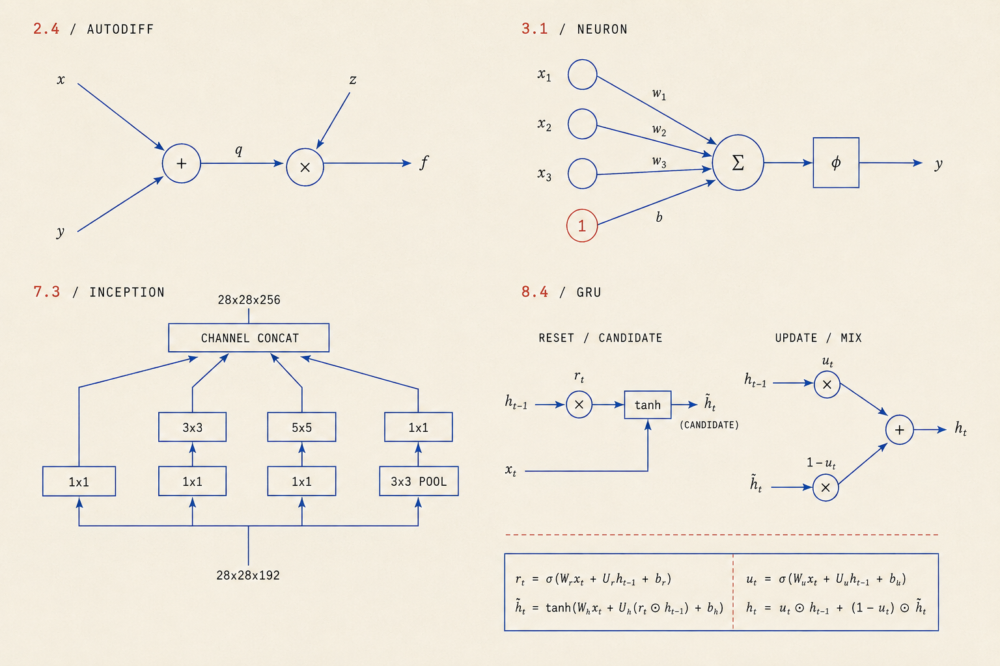

FROM ART DIRECTION TO SVG
Generated composition reference first, then four code-native reconstructions. The SVGs use the lesson's original font stack and paper/ink tokens. Only the reference is a raster image.
Preview only. The generated reference contains formula/connection inaccuracies; the reconstructed SVGs follow the chapter and slides instead.
Exact generation prompt and corrections · Full DL comparison

2.4 / AUTODIFF
The same graph is shown twice. Forward: q=x+y=3, f=qz=−12. Reverse: seed ∂f/∂f=1. The product sends ∂f/∂q=z=−4 and ∂f/∂z=q=3; the sum passes −4 to x and y. Circles denote primitive operators.Open chapter
3.1 / NEURON
Each input contributes wᵢxᵢ to the sum. The constant input 1 contributes w₀ (bias). The sum produces a=w₀+Σᵢwᵢxᵢ; the activation produces y=φ(a). Straight arrows meet the actual circle boundaries.Open chapter
7.3 / INCEPTION
Input 28×28×192. Branches: 1×1→64; 1×1→96 then 3×3→128; 1×1→16 then 5×5→32; 3×3 max pool (192 channels) then 1×1→32. Stride 1 and suitable padding preserve 28×28 in every path. Concatenation gives 64+128+32+32=256 channels, not a sum of feature values.Open chapter
8.4 / GRU
Left: h̃ₜ=tanh(Wₕ(rₜ⊙hₜ₋₁)+Uₕxₜ); the tanh block includes this affine transformation. Right reuses that same candidate: hₜ=uₜ⊙hₜ₋₁+(1−uₜ)⊙h̃ₜ. Gates are computed from both inputs: rₜ=σ(Wᵣhₜ₋₁+Uᵣxₜ), uₜ=σ(Wᵤhₜ₋₁+Uᵤxₜ). Their shared-input wiring is factored into these definitions. × means elementwise product; hₜ is also the output.Open chapter